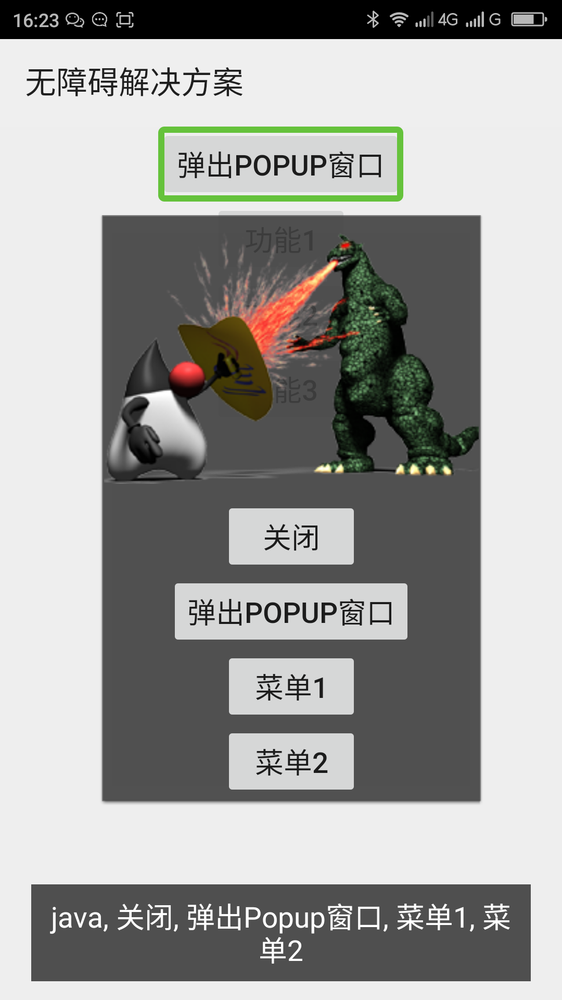
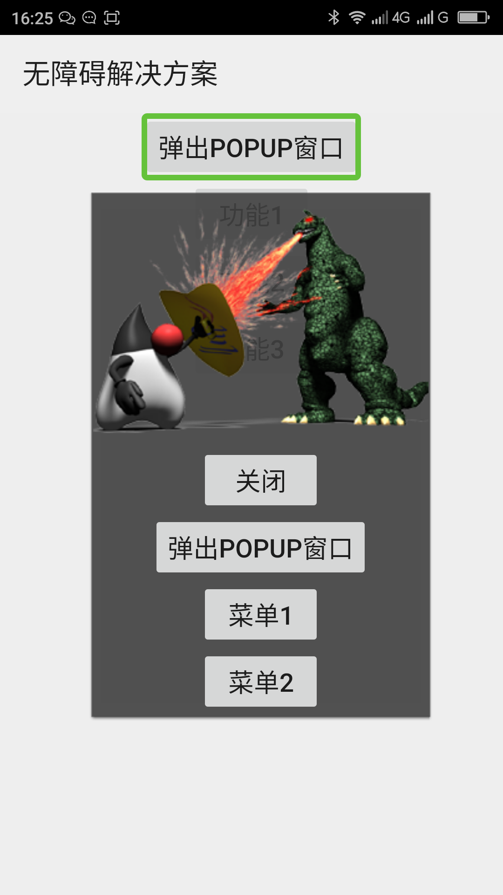

消除浮窗（popupWindow）弹出之后自动把窗口内的所有元素朗读一遍的方法____20160526
【问题描述】
当浮窗（PopupWindow）用setFocusable(true)设置为有焦点，且浮窗（PopupWindow）的布局也设置为有焦点（对布局的view设置setFocusable(true)），当浮窗（PopupWindow）弹出之后会把窗口内的所有控件朗读一遍，如本解决方案中的浮窗内的布局中有一个添加替代文本为”java”的图片、有“关闭”、“菜单1“、“菜单2”几个元素，浮窗弹出的时候会朗读“java 关闭 菜单1 菜单2“。
【问题解决方案描述】
当浮窗（PopupWindow）用setFocusable(true)设置了焦点之后，浮窗的布局不要设置焦点。浮窗的布局设置了焦点之后浮窗弹出之后焦点会落在整个界面上，所有屏幕阅读器会把所有元素朗读一遍。
【前后效果图对比】
|  |  |
| 优化前，双击弹出POPUP窗口按钮，自动朗读“java 关闭 弹出Popup窗口 菜单1 菜单2”； | 优化后，双击弹出POPUP窗口按钮，无自动朗读； |